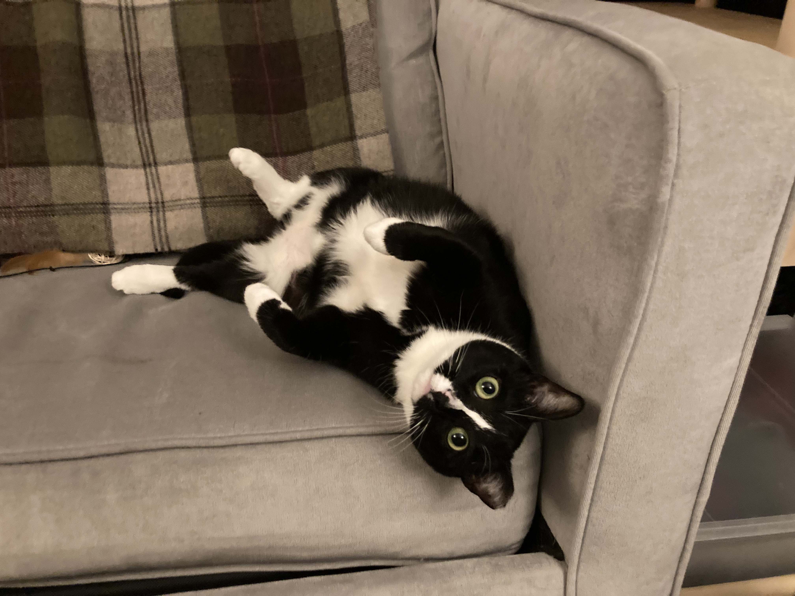
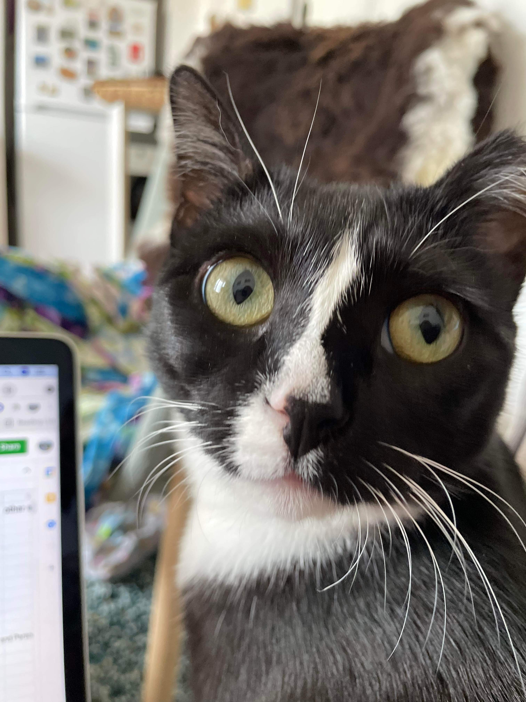
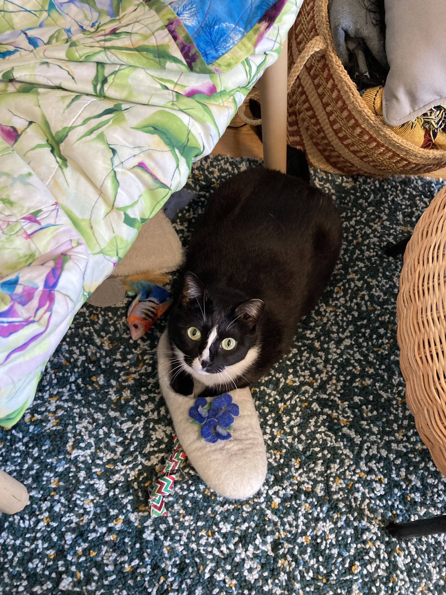

I am a Chancellor's Fellow (=UK lecturer=US Assistant professor) at the University of Edinburgh in the School of Informatics. I am affiliated with ILCC.
I am interested in reasoning and understanding implicit meaning in language. My recent work has focused on generics (a specific type of language generalization). At Edinburgh, I will be working on developing interpretable neuro-symbolic methods to improve defeasible reasoning in computational systems. These methods will incorporate theoretically-grounded components into deep learning models. I will be using these methods to improve reasoning in real-world texts, including dialogues, argumentation, and text-based games.
I will be recruiting a PhD student to start either winter or fall 2025.
I recieved my PhD in computer science from Columbia University where I worked with Prof. Kathy McKeown. During my PhD, I interned at AI2 (on the MOSAIC team, working with Jena Hwang and Chandra Bhagavatula) and at Amazon Science (working with Miguel Ballesteros and Shuai Wang). Prior to Columbia, I was an undergraduate researcher at the University of Washington with Prof. Yejin Choi, working on commonsense knowledge.
My CV is here.
Contact: emily.allaway@ed.ac.uk
* denotes equal contribution
As an undergraduate student, I had wonderful graduate students as mentors and collaborators (Hannah Rashkin, Maarten Sap) and I am happy to work with dedicated undergraduate and masters students.
Past students:
In my spare time I like to travel, play music, and ballroom dance.
I have a cat named Mila.
